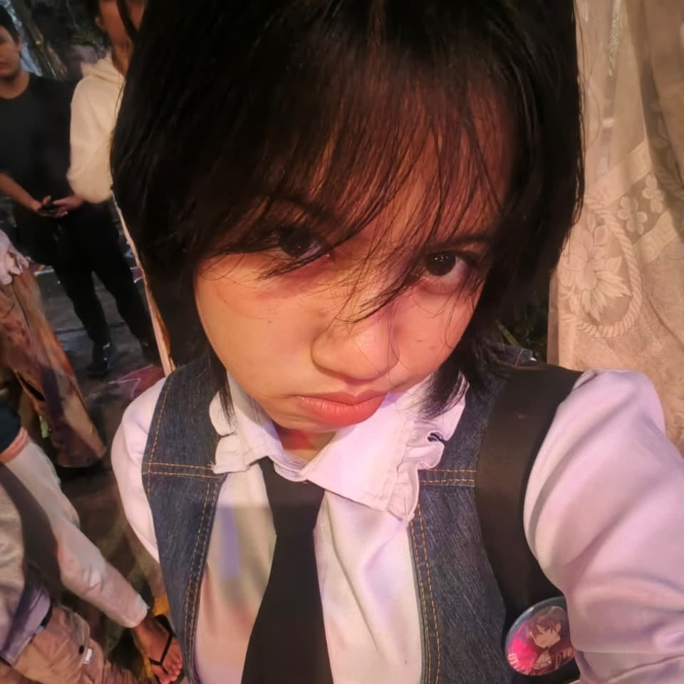

📍 Malang, Pakis
📞 0819-1813-8369
✉ almafaustinas@gmail.com
Saya merupakan siswi kelas 10 semester 2 jurusan Teknik Komputer dan Jaringan (TKJ) yang memiliki ketertarikan dalam bidang teknologi, maintenance komputer, dan pengenalan server. Saat ini saya terus mengembangkan kemampuan dalam dunia IT serta belajar membuat dan mengelola website sederhana menggunakan HTML dan CSS.
Melakukan pembersihan perangkat komputer, pengecekan komponen, serta instalasi dasar untuk menjaga performa perangkat tetap optimal.
Mempelajari dasar server, hosting, dan pengelolaan website sederhana.